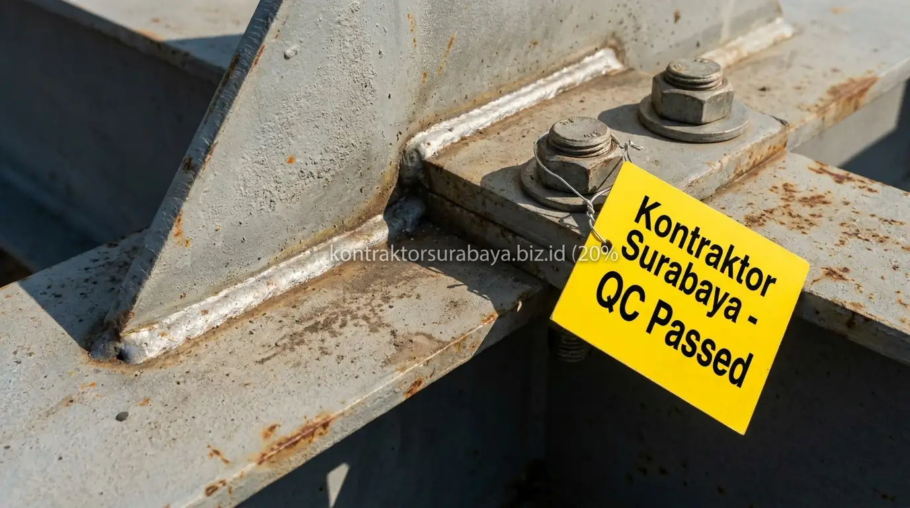

Perkembangan kawasan industri di Mojokerto seperti Ngoro Industrial Park (NIP) dan koridor bypass Mojosari memicu lonjakan pembangunan fasilitas pabrik manufaktur dan gudang logistik skala besar. Karakteristik utama bangunan industri modern adalah kebutuhan ruang operasional yang luas dan bebas hambatan, sehingga rancangan atap mengandalkan struktur baja profil WF (Wide Flange) atau H-Beam dengan bentang lebar mencapai 24 hingga 40 meter tanpa tiang tengah.
Namun, mendirikan struktur atap bentang lebar tanpa tiang tengah menuntut presisi fabrikasi dan ereksi yang tanpa celah. Mengandalkan jasa kontraktor bangunan komersial Mojokerto yang berpengalaman dan disiplin menerapkan SOP pengawasan mutu (Quality Control) adalah garansi mutlak agar fasilitas industri Anda aman dari bahaya keruntuhan struktur, defleksi lendutan berlebih, maupun kebocoran atap saat badai angin kencang.
1. Kenapa Pengawasan Mutu Krusial pada Struktur Baja Bentang Lebar?
Struktur baja bentang lebar menahan beban atap tanpa dukungan kolom tengah, sehingga kesalahan kecil pada sambungan atau pengelasan berpotensi berdampak lebih besar dibanding struktur dengan bentang yang lebih pendek dan banyak titik dukungan. Beban mati struktur, beban hidup pekerja perawatan, beban angin tekan-hisap, serta beban getaran mesin atau hoist crane overhead terkonsentrasi langsung pada titik-titik simpul (joint pertemuan balok rafter dan kolom).
Kegagalan pada satu titik sambungan pada struktur bentang lebar dapat memicu keruntuhan berantai (progressive collapse) yang merusak seluruh rangka bangunan. Oleh karena itu, pengawasan mutu yang ketat pada setiap tahap konstruksi—mulai dari kedatangan material di gudang perakitan hingga pengencangan baut di puncak atap—menjadi sangat krusial untuk memastikan keamanan aset bernilai miliaran rupiah dalam jangka panjang.
2. Standar Pemeriksaan Sambungan Baut pada Struktur Baja
Torsi baut sesuai spesifikasi, jumlah baut sesuai gambar kerja, washer dan mur terpasang dengan benar, dan pengecekan berkala setelah pemasangan adalah empat standar pemeriksaan sambungan baut pada struktur baja berat:
- Torsi Baut Sesuai Spesifikasi (Torque Check): Baut mutu tinggi (High Strength Bolt seperti grade A325 atau F10T) harus dikencangkan menggunakan kunci torsi (torque wrench) terkalibrasi. Nilai momen torsi wajib memenuhi ambang batas prategang agar sambungan bekerja secara friksi sempurna tanpa mengalami slip.
- Jumlah dan Diameter Baut Sesuai Gambar Kerja: Tidak boleh ada satu pun lubang baut pada pelat sambung (end plate atau splice plate) yang dibiarkan kosong atau dipasang baut berukuran lebih kecil dari diameter lubang nominal.
- Kelengkapan Washer dan Mur Pengunci: Washer baja keras (hardened washer) wajib terpasang di bawah kepala baut dan mur untuk mendistribusikan tegangan jepit secara merata serta mencegah keausan pelat dasar saat pengencangan maksimal.
- Pengecekan Berkala dan Marking Pasca Pemasangan: Baut yang telah diperiksa torsinya diberi tanda cat kontras (torque marking) untuk memudahkan inspeksi visual cepat apabila terjadi pergeseran atau kendur akibat getaran dinamis pabrik.

3. Standar Pemeriksaan Kualitas Pengelasan pada Rangka Baja
Uji visual hasil pengelasan, tidak ada porositas atau retak pada las, ketebalan las sesuai spesifikasi, dan sertifikasi welder yang mengerjakan adalah empat standar pemeriksaan kualitas pengelasan pada rangka baja berat di lapangan maupun bengkel fabrikasi:
- Uji Visual Hasil Pengelasan (Visual Inspection 100%): Pemeriksaan kasat mata menggunakan welding gauge untuk memastikan permukaan rigi-rigi las halus, bebas kerak terak (slag inclusion), dan tidak ada takik las (undercut) yang melemahkan penampang baja dasar.
- Bebas Porositas dan Retak Mikro: Celah gelembung udara halus (porosity) atau retak rambut pada garis las sangat berbahaya karena dapat memicu perambatan patah lelah (fatigue fracture). Pengujian non-destruktif seperti Dye Penetrant Test (PT) wajib dilakukan pada sambungan kritis.
- Ketebalan Kaki Las (Throat & Leg Size): Ukuran tebal las sudut (fillet weld) harus persis memenuhi dimensi yang ditentukan pada gambar detail perencana struktur, tidak boleh kurang dari ketebalan minimum pelat pengaku (stiffener).
- Sertifikasi Welder Resmi: Seluruh tukang las yang bertugas pada komponen struktural wajib memegang sertifikat kualifikasi welder (Welder Performance Qualification) sesuai standar AWS D1.1 atau standar Depnaker.
| Komponen Inspeksi | Metode Pengujian | Kriteria Keberterimaan | Alat Kerja QC |
|---|---|---|---|
| Sambungan Baut HTB (A325/F10T) | Torque testing & DTI washer check | Torsi mencapai 100% spesifikasi desain, tanpa slip | Calibrated Torque Wrench |
| Kualitas Las Fillet & Groove | Visual Test (VT) & Liquid Penetrant (PT) | Nol retak (zero crack), bebas undercut > 0,5 mm | Welding Gauge & Penetrant Spray |
| Kelurusan Kolom Vertikal | Plumbness check 2 arah orthogonal | Deviasi maksimal h/500 atau ≤ 25 mm | Total Station / Theodolite |
| Lapisan Cat Anti Karat | Dry Film Thickness (DFT) Test | Tebal cat primer zink chromate ≥ 75–100 mikron | Coating Thickness Gauge |
| Anchor Bolt Fondasi Pedestal | Coordinate & projection check | Penyimpangan as ≤ 3 mm, drat bersih terlumasi | Meteran Baja & Waterpass Digital |
Rencana pengujian mutu dan alokasi biaya pengadaan material bersertifikat SNI dapat Anda pelajari lebih detail melalui panduan RAB & estimasi biaya konstruksi kami.
4. Bagaimana Menguji Kekuatan Struktur Sebelum Atap Dipasang?
Pemeriksaan visual menyeluruh pada seluruh titik sambungan, dipadukan uji beban dan pengamatan lendutan awal sesuai kebutuhan proyek, membantu memastikan rangka baja siap menahan beban atap sebelum proses pemasangan penutup atap dilanjutkan.
Pengujian ini mutlak dilakukan sebelum beban mati dari material seng penutup atap, insulasi peredam panas, dan pipa talang air ditempatkan di atas rafter. Jika ditemukan kesalahan seperti rafter melendut melebihi batas atau ikatan angin (bracing) belum terkunci tegang, proses perbaikan akan jauh lebih mudah, aman, dan berbiaya hemat sebelum atap tertutup secara permanen.
5. Pengawasan Kelurusan dan Toleransi Dimensi Rangka Baja
Pengukuran kelurusan vertikal dan horizontal pada rangka baja menggunakan alat ukur theodolite atau total station membantu memastikan toleransi dimensi tetap berada dalam batas yang diizinkan sesuai standar konstruksi baja AISC dan SNI.
Rangka baja yang miring atau memiliki penyimpangan dimensi melebihi batas toleransi menimbulkan beban eksentrisitas dan tegangan puntir tambahan pada baut fondasi (anchor bolt). Pengawasan ketat pada kelurusan portal frame dilakukan secara konsisten sepanjang proses pengangkatan (erection) dengan mobile crane, bukan sekadar diperiksa sepintas saat pekerjaan sudah selesai.
6. Dokumentasi dan Sertifikasi Mutu yang Perlu Disiapkan Kontraktor
Laporan hasil uji pengelasan, sertifikat mill material baja, laporan pengecekan baut, dan gambar as-built adalah empat dokumen dan sertifikasi mutu yang perlu disiapkan kontraktor pada proyek konstruksi baja berat:
- Sertifikat Mill Material Baja (Mill Certificate): Dokumen resmi dari pabrik peleburan baja (seperti Krakatau Steel atau Gunung Garuda) yang memvalidasi komposisi kimia dan kuat tarik (yield & tensile strength) profil baja yang digunakan.
- Laporan Hasil Uji Pengelasan (Welding Inspection Report): Catatan tertulis hasil pengujian visual maupun pengujian tanpa rusak (NDT) yang ditandatangani oleh Welding Inspector bersertifikat.
- Laporan Pengencangan Baut (Bolt Torque Log): Dokumentasi persentase baut yang telah diuji kekencangannya beserta kalibrasi alat ukur torsi yang digunakan di lokasi proyek Mojokerto.
- Gambar As-Built (As-Built Drawings): Gambar kerja akhir yang mencerminkan posisi fisik nyata di lapangan, menjadi panduan utama bagi manajemen pabrik untuk pemeliharaan berkala atau rencana ekspansi di masa mendatang.
7. Kesalahan Umum dalam Pengawasan Mutu Konstruksi Baja Berat
Berdasarkan evaluasi lapangan tim project engineer Kontraktor Surabaya, beberapa kelalaian yang paling sering memicu kegagalan struktur baja gudang meliputi:
- Tidak Memeriksa Torsi Baut Secara Terukur: Pemasangan baut hanya dikira-kira dengan kunci pas biasa tanpa torque meter, meninggalkan sebagian baut dalam kondisi longgar yang mudah lepas akibat getaran mesin pabrik.
- Mengabaikan Cacat Las Porositas dan Undercut: Tidak membersihkan terak las sebelum pengecatan sehingga cat menutup cacat retak las yang rapuh dari pengamatan kasat mata.
- Menggunakan Material Banci / Non-SNI Tanpa Sertifikat: Tergiur harga profil baja yang lebih murah tanpa memeriksa sertifikat mill pabrik, yang ternyata memiliki ketebalan flens dan web di bawah toleransi aman SNI.
- Melupakan Penguncian Batang Ikatan Angin (Cross Bracing): Batang pengaku silang atap dan dinding dibiarkan kendor, membuat bangunan rentan bergoyang hebat saat diterpa angin kencang musim hujan.
"Konstruksi baja bentang lebar adalah karya rekayasa presisi tinggi. Keamanan ribuan meter persegi lantai pabrik berakar pada kepatuhan teknis di setiap millimeter sambungan las dan setiap nilai torsi baut yang terpasang." — Erlang Sinatrya, Lead Project Engineer Kontraktor Surabaya
Pengawasan mutu yang konsisten pada setiap tahap konstruksi baja berat menjadi kunci utama memastikan keamanan struktur pabrik atau gudang bentang lebar Anda. Pelajari kapabilitas rekayasa konstruksi komersial kami pada halaman jasa kontraktor bangunan, kenali profil tim profesional kami di halaman tentang kami, serta telusuri rekam jejak proyek industri kami di direktori galeri proyek dan layanan konstruksi terpadu kami.